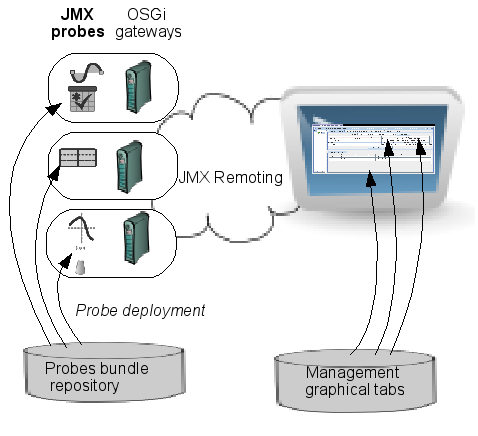
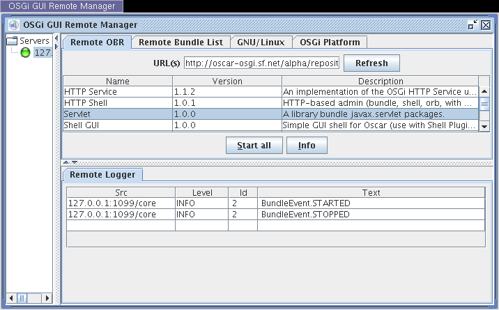

MOSGi enables the remote management of OSGi-compatible service gateways, using JMX. The framework is a reference architecture for end-to-end gateway management. It provides the following features:
- relies on JMX management infrastructure (IP-based management),
- provides two JMX agents: the standard Java 1.5 agent and a specific Java 1.4 lightweight embedded agent (MX4J agent deviation),
- provides a way to deploy various probes on remote gateways,
- provides a management console,
- the graphical part of a probe (management console part) can be dynamically plugged in the management console and is dynamically downloaded.
Very fast QuickStart Guide
Go into $FELIX_HOME/trunk/mosgi.doc and read Readme.txt.
General architecture
The overall architecture is presented in the following picture :

How it works
Managed OSGi gateways can install JMX probes from various repositories. A JMX probe is a standard OSGi bundle that registers an MBean component in the managed gateway's JMX agent.
The management console (running in a standard OSGi framework) is connected to each gateway through the JMX remoting protocol. When it connects for the first time to a managed gateway, it asks for probes that are installed (i.e. all MBeans registered in the TabUI JMX domain). Then, for each MBean found, the management console asks for its graphical representation through a call to our standard API (component getUI() call). This call redirects to a bundle in the GUI probe repository that is installed by the management console. So the management console discovers at run-time the user interface it should use to
supervise a specific remote gateway.
Here is a description of different bundles that should be installed on both parts of the infrastructure (managed OSGi gateway and Management console).
A managed OSGi gateway must host the following bundles :
- JMX-MX4J Agent Service: provides a JMX agent. Either through a wrapper to jdk1.5 standard agent or through using a specific lightweight inner agent1 (originate from mx4j project). This agent service also declares a standard MBeanServer service interface..
- JMX rmiregistry: wraps RMI registry life cycle. It's used by the JMX remoting infrastructure to register
- JMX RMI connector: wraps a standard JMX remoting RMI connector
- Remote Logger: notifies log informations
A JMX Console is an OSGi framework also (for simplicity) which should host two bundles :
- JMX Console: the graphical framework that will host graphical plugins
- jmxconsole common tabs: tabs that are common to all gateways. For the moment it only concerns a tab that shows remote notification (it works whith remote logger)
OSGi/JMX MBean registration
MOSGi installs JMX-MX4J agent at the gateways level. Any one can register an MBean to the JMX agent. The registration can be made in two ways. The direct code and the white board pattern.
- In the direct code, one can register an MBean to the agent through the standard service interface : javax.management.MBeanServer
Example:
org.osgi.framework.ServiceReference sr = context.getServiceReference(javax.management.MBeanServer.class.getName()); javax.management.MBeanServer mbs=(javax.management.MBeanServer)context.getService(sr); mbs.registerMBean(new MBeanImpl(), new ObjectName("Foo:FooName");
Exemple of such code is uses in mosgi.managedelements.bundlesprobes code in felix repository
- In the whiteboard pattern, one can register an MBean through registering its interface to the framework as a service. If the interface name ends with MBean or if the interface is javax.management.DynamicMBean, the agent will automatically register the implementation as a standard MBean. The objectName of the MBean can either be defined at registration time with the org.apache.felix.mosgi.jmx.agent.Constants.OBJECTNAME property name or automatically build through introspection.
Example:
java.util.Properties prop=new java.util.Properties(); prop.add( org.apache.felix.mosgi.jmx.agent.Constants.OBJECTNAME, "Foo:FooName"); context.registerService(test.FooMBean.class.getName(), new test.Foo(), prop);
Management Console
The management console is a ad-hoc jmx compatible console. Its aim is not to be a concurrent to general purpose consoles like MX4J or JConsole but provides an ad-hoc user interface depending on the managed gateway. The console is based on a plugin framework. Each time the consol connects to a gateway it gets the list of available MBean. Then for each registered MBean it asks for specific local bundles for managing it. Each graphical bundle is integrated as a graphical tab in the management console.
In the next screenshot, the gateway user has deployed 4 probes on the remote gateway : Remote Obr, Remote Bundle List, GNU/Linux and OSGi Plateform.
In order to get these tabs, the gateway manager deploys the 4 probe bundles on the remote gateway and GUI tabs are automatically made available to the remote console. These bundles are :
- ObrProbe : a probe that enables interaction with obr for bundle deployment
- BundleProbe : a probe that enables the bundle life-cycle management
- GNU-Linux : a probe that gets status from running host operating system
- OSGi Platform : a probe that gets information from current running gateway
These plugin are developed as simple examples and are available in felix repository. A ProbeGuide that describes plugin integration is available. Plugin are dynamically removed and reinstalled each time you change your selected gateway.
MBean Definition
An MBean is a Management Component for the JMX framework. It is made of an MBean interface and an implementation of it. The MBean interface is used to make remote management with the implementation.